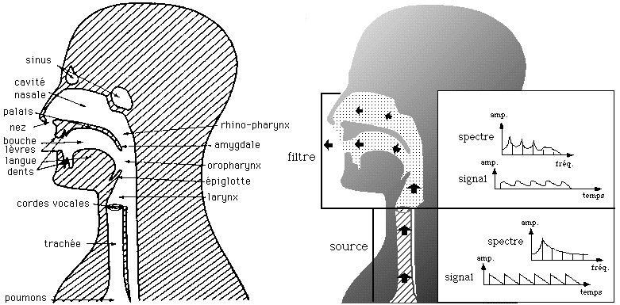

La voix chantée
Principe
Il existe des instruments pour lesquels les phénomènes d’émission et de résonance sont indépendants. En ce qui concerne la voix, il n'y a pratiquement aucune relation entre les caractéristiques de l'oscillation émise par les cordes vocales et le résonateur. Dans ce cas, le résonateur joue un rôle très important comme filtre. Lors du passage du son dans le résonateur, les amplitudes relatives de ses partiels sont modifiées. Si un partiel est proche des fréquences caractéristiques du résonateur, il est émis avec une forte amplitude, sinon il est atténué.
Lors de la production du son, les cordes vocales agissent comme un oscillateur, tandis que le larynx, le pharynx et la bouche, parfois complétés par le conduit nasal, agissent comme des filtres.

La source
Le flux d'air envoyé par les poumons passe par la glotte en faisant vibrer les cordes vocales : c'est la source sonore. Son spectre est harmonique et comprend de nombreux partiels dont les amplitudes relatives peuvent varier selon la hauteur et la force de la voix.
Le registre de la fondamentale dépend de la longueur et de la masse des cordes vocales, plus les cordes sont longues et fines plus la fondamentale est élevée.
En général, la fondamentale pour la voix parlée d'un homme adulte se situe aux alentours de 110 Hz et un peu moins d'une octave au-dessus pour une femme adulte.
Un chanteur basse peut descendre jusqu'à 65 Hz (Do1) et monter jusqu'à 330 Hz (Mi3).
L’étendue d’une voix de ténor est comprise entre 123 Hz et 520 Hz.
Celle d’une alto entre 175 Hz et 700 Hz
Celle d’une soprano entre 260 Hz et 1300 Hz.
Pour une voix normale chantée, le spectre harmonique est constitué de partiels qui suivent une décroissance d'environ 12 dB/octave. En règle générale, une augmentation du volume sonore s'accompagne d'une augmentation relativement importante des partiels élevés.
Les formants
La source se propage à travers le conduit vocal qui agit comme un résonateur et filtre le son avant de l’émettre. Il en résulte l’apparition de formants qui ont une grande influence sur les sons de la voix : les partiels du « son-source » qui sont placés dans la région d’un formant sont amplifiés par rapport aux autres. Les formants apparaissent comme de larges pics dans l'enveloppe spectrale du son produit.

Chaque voyelle présente un spectre caractéristique dépendant du type de voix.
En modifiant la forme du conduit vocal, un homme adulte peut faire varier la fréquence du premier formant entre 150 Hz et 900 Hz, celle du second entre 500 Hz et 3000 Hz et celle du troisième entre 1500 Hz et 4500 Hz. Dans la plupart des cas, ce sont les valeurs des deux premiers formants qui déterminent la nature de la voyelle.
Les consonnes contiennent également des formants mais ceux-ci jouent un rôle différent de ceux des voyelles. Pour les consonnes, les caractéristiques du son proviennent des changements particuliers des formants. Pour la plupart des consonnes, les trois formants les plus graves présentent des évolutions permettant leur reconnaissance et leur identification.
Un trait caractéristique de la voix des chanteurs basse, ténor et alto est la présence d’un pic particulièrement marqué dans la partie aiguë du spectre, situé entre 2 kHz et 3 kHz. Il proviendrait de la fusion des 3e, 4e et 5e formants. Ce formant est appelé le formant des chanteurs. Il permet de rendre la voix plus distincte car il est placé dans un registre où l'oreille est particulièrement sensible et où l'orchestre est moins présent.
Pour les voix de soprano, la technique de chant consiste à faire coïncider la fréquence de la fondamentale avec celle du premier formant de façon à permettre son amplification.
En général, lorsque les chanteurs atteignent les aigus et qu’ils doivent choisir entre la qualité de la voyelle et la qualité de la voix, ils sacrifient les voyelles et placent le premier formant sur la fondamentale puis le deuxième formant sur le deuxième partiel.